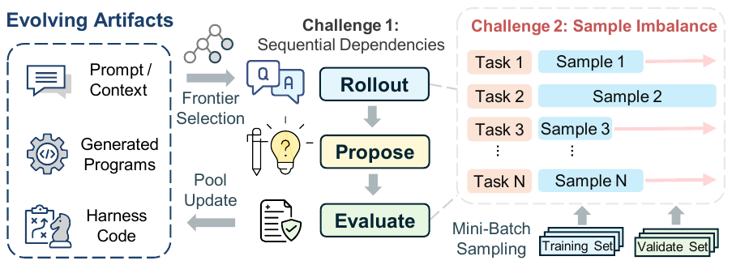
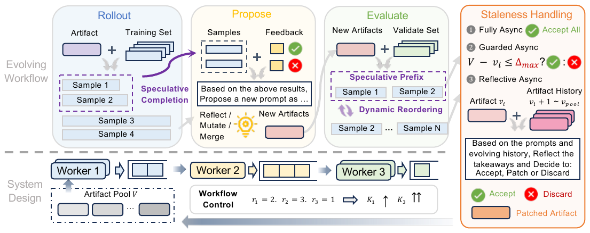
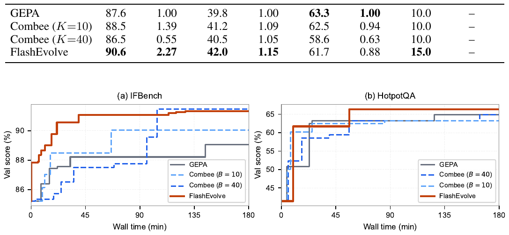

FlashEvolve
An asynchronous worker-queue framework for LLM agent evolution — 3.5× faster than synchronous GEPA, with no algorithmic changes.
(vLLM, GEPA)
(API serving)
(IFBench)
Meta-Harness
The Problem
LLM-based agent evolution (GEPA, ACE, Meta-Harness) reflects on execution traces to refine prompts, memories, and harness code — outperforming GRPO by 6% on average. The catch: a single GEPA step takes ~2 minutes, and reaching a stable improvement takes over 2 hours on an H100. Stages run serially, and within each stage, a few long-tail requests hold up the entire batch.

The Idea
Treat the evolution loop as a set of LLM-heavy stages connected by asynchronous workers and queues. Stages overlap. When artifacts go stale — produced before the pool was updated — repair them in the language space instead of discarding them. Unlike RL weight-space staleness, a stale prompt is inspectable: the same LLM that proposed it can also patch it.

How It Works
Three mechanisms working together:
Async Workers & Queues
Each stage gets its own worker pool and queue. Rollout, propose, and evaluate overlap across evolution steps. Queue items carry the artifact pool version v so stale items can be detected.
Reflective Patching
When a stale prompt arrives, an LLM worker inspects it against the artifact history, discards task-specific noise, and patches in transferable principles. Reaches 94.3% validation in 30 min on IFBench.
Speculative Completion
Release partial output after an α fraction of a stage's requests finish — completed samples flow downstream while long-tail requests continue in the background. With α=0.25, validation throughput rises from 0.5 → 3.15 val/min.
Speedup Results
Measured on GEPA workloads with Qwen3-8B (vLLM, single H100) and GPT-4o-mini (API). All baselines run on the same DSPy + vLLM stack — differences come from pipeline, not the LLM backend.

vs GEPA (vLLM avg)
vs GEPA (API avg)
peak (AIME, vLLM)
peak (IFBench, API)
Validation-score / time budget (Qwen3-8B, 30 min):
| Method | IFBench | Norm. rate | HoVer | HotpotQA | AIME |
|---|---|---|---|---|---|
| GEPA | 87.6 | 1.00× | 39.8 | 63.3 | 10.0 |
| Combee (K=10) | 88.5 | 1.39× | 41.2 | 62.5 | 10.0 |
| Combee (K=40) | 86.5 | 0.55× | 40.5 | 58.6 | 10.0 |
| FlashEvolve | 90.6 | 2.27× | 42.0 | 61.7 | 15.0 |
See the paper for full ablations on worker concurrency, speculative thresholds, and staleness policies.
When It Fails
Other Algorithms
The same async framework drops onto evolution algorithms beyond GEPA — ACE (context playbook evolution) and Meta-Harness (harness-code evolution) — without changing their semantics.